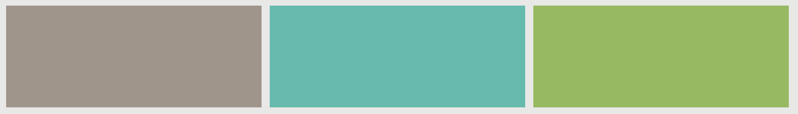
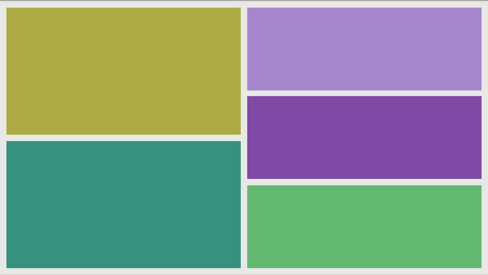

Emeus - Constraint-based layout manager for GTK+

What is Emeus?
Emeus is a constraint-based layout manager widget for GTK+, written using the Cassowary constraint solving algorithm.
What's the difference between Emeus and GTK+'s layout managers?
GTK+ has two different sorts of layout managers:
- the boxes-inside-boxes model, represented by GtkBox and which is the preferred layout management mechanism
- the fixed positioning and sizing model, using the GtkFixed and the GtkLayout containers
The first model works really well in ensuring that UIs are responsive to size changes, by avoiding pixel-perfect positioning on the screen, as well as ensuring that changing the font size or margins and paddings do not break the user interface; its main down side is that it requires accurate, and often verbose packing of widgets inside boxes, inside other boxes.
The second model allows a more efficient way to construct a user interface, at the major costs of either "freezing" it, or requiring constant recalculations of the relative position and size of each UI element.
Emeus provides a third layout management policy, based on constraints; each UI element binds one of more of its attributes — like its width, or its position — to other UI elements, in a way that is more natural to describe from a UI building perspective, and hopefully more efficient that stacking piles of boxes one inside another.
Constraints
EmeusLayoutConstraint is a GtkContainer that can
support multiple children; each child, in turn, is associated to one or more
EmeusConstraint instances. Each constraint is the expression of a simple
linear equation:
item1.attr1 = item2.attr2 × multiplier + constant
Where:
-
item1is the target widget, that is the widget we want to constraint; if unset, the target will be the layout itself -
attr1is an attribute of the target widget, likewidthorend, that we want to constraint -
item2is the source widget, that is the widget that provides the value of the constraint; if unset, the source will be the layout itself -
attr2is an attribute of the source widget that provides the value of the constraint -
multiplieris a multiplication factor, expressed as a floating point value -
constantis an additional constant factor, expressed as a floating point value
Using both notations, then, we can construct user interfaces like:
By expressing the constraints between the UI elements. For instance, we can
center button2 within its parent and give it a minimum width of 250
logical pixels:
button2.width >= 250
button2.centerX = parent.centerX
button2.centerY = parent.centerY
Then, we can tie button1 and button3 to button2, and ensure that the
width and height of all three buttons are the same:
button1.end = button2.start - 8
button1.width = button2.width
button1.height = button2.height
button3.start = button2.end + 8
button3.width = button2.width
button3.height = button2.height
The EmeusConstraintLayout widget will attempt to resolve all the
constraints, and lay out its children according to them.
Visual Format Language
Emeus constraints can be expressed both in code, using the EmeusConstraint object methods,
and using a Visual Format language.
The VFL is a compact syntax that describes how the layout should look like; for instance:
|-[button1(>=250)]-[button2(==button1)]-[button3(==button1)]-|
V:|-[button1(==100)]
V:|-[button2(==button1)]
V:|-[button3(==button1)]
button1must be at least 250 pixels wide, and must be 100 pixel highbutton2must have the same width and height ofbutton1button3must have the same width and height ofbutton1
Some additional examples of layouts described via VFL:
Side bar
H:|-[view0(view2)]-[view2]-|
H:|-[view1(view3)]-[view3]-|
H:[view4(view3)]-|
V:|-[view0(view1)]-[view1]-|
V:|-[view2(view3,view4)]-[view3]-[view4]-|
Details
H:|-[view0(==128)]-[view1]-|
H:|-[view4(==view0)]
H:[view2(==view1)]-|
H:[view3(==view1)]-|
V:|-[view0(==128)]
V:[view4(==48)]-|
V:|-[view1]-[view2(view1)]-[view3(view1)]-|
A layout can be described using VFL by letting Emeus parse the description and generate the necessary constraints.
Not all layouts or constraints can be described to the Visual Format language, but using it as a starting point for more complex layouts reduces the amount of code needed.
Building
- Install meson
- Install ninja
- Create a build directory:
$ mkdir _build && cd _build
- Run meson:
$ meson
- Run ninja:
$ ninja
Documentation
The API reference for Emeus is available online.
Licensing
Emeus is released under the terms of the GNU Lesser General Public License, either version 2.1 or, at your option, any later version.
The Cassowary simplex solving algorithm implementation is largely inspired by the equivalent implementations written in various other language, including:
- Cassowary — the original C++ implementation, released under the terms of the GNU Lesser General Public License, version 2.1 or later
- Cassowary.js — JavaScript implementation, released under the terms of the Apache License, Version 2.0
- Cassowary — Python implementation, released under the terms of the BSD 3-clause license
Additionally, the automatic layout solving is inspired by autolayout.js, a JavaScript automatic constraint-based layout, which, in turn, is based on the Apple autolayout layout manager.
You can check on the Overconstrained website for additional Cassowary implementations in various languages.